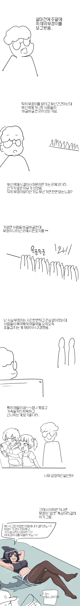
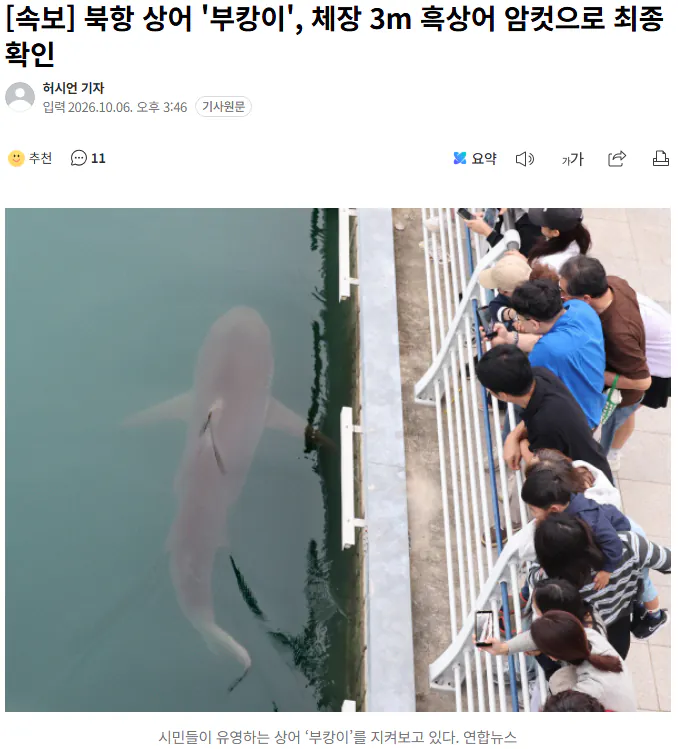

56 · 27 · 3 시간 전 · 원문


이건 제대로 된 암컷 아저씨
수집 당시 댓글 27개
ᅟᅠY · 4 시간 전
↳ 답글 · 순라면진한맛 · 3 시간 전
욤키푸르 · 4 시간 전
↳ 답글 · 친절한그렐로드 · 3 시간 전
누가 c...입질의 추억이라고 한 걸 잊지 못하겠어 ㅋㅋㅋㅋ
주관적인요정 · 4 시간 전
아직 살아있는거면 뭐라도 먹는거 아닌가
호러아니 · 3 시간 전
햇빛한바구니고양이두스푼 · 3 시간 전
작가캐릭터도 모에화시켜주지 이작가인줄 몰랐네
말좆양봉호로섹스출발 · 3 시간 전
빅광대 · 3 시간 전
민감보습장벽크림 · 3 시간 전
일째 고민중 · 3 시간 전
ㄴㅉ · 3 시간 전
볼트태클 · 3 시간 전
흑상어였네 무태상어 어쩌고 하더만
번육개장먹는사람 · 3 시간 전
많이걸으면터벅터벅닭다리 · 3 시간 전
친절한그렐로드 · 3 시간 전
어흐어흐
오왕재 · 3 시간 전
년째 잉어킹 · 3 시간 전
주둥이에 상처 났다든데.쟤 지켜보는 공무원 입장에선 진짜 하루하루 피 말리겠네;;
↳ 답글 · 1232423 · 3 시간 전
동물원 판다 본국 송국에도 그지랄이 났었는데만약 저게 폐사한다고 하면...
Vv연옥의사신vV · 3 시간 전
FURRY바게 · 3 시간 전
변형빼기
복숭아먹기 · 3 시간 전
캬
플마님 · 3 시간 전
Ratatouille · 3 시간 전
걸리겠노?
↳ 답글 · 넌좃도몰라존스노우 · 1 시간 전
글리겠나
코스모귀 · 3 시간 전
쟨 아직도 저깄냐 그물로 건져서 바다에 던지면 안되나?
블루아카이브 · 2 시간 전
댓글
수집 당시 댓글 27개
ᅟᅠY · 4 시간 전
· 순라면진한맛 · 3 시간 전
욤키푸르 · 4 시간 전
· 친절한그렐로드 · 3 시간 전
누가 c...입질의 추억이라고 한 걸 잊지 못하겠어 ㅋㅋㅋㅋ
주관적인요정 · 4 시간 전
아직 살아있는거면 뭐라도 먹는거 아닌가
호러아니 · 3 시간 전
햇빛한바구니고양이두스푼 · 3 시간 전
작가캐릭터도 모에화시켜주지
이작가인줄 몰랐네
말좆양봉호로섹스출발 · 3 시간 전
빅광대 · 3 시간 전
민감보습장벽크림 · 3 시간 전
일째 고민중 · 3 시간 전
ㄴㅉ · 3 시간 전
볼트태클 · 3 시간 전
흑상어였네 무태상어 어쩌고 하더만
번육개장먹는사람 · 3 시간 전
많이걸으면터벅터벅닭다리 · 3 시간 전
친절한그렐로드 · 3 시간 전
어흐어흐
오왕재 · 3 시간 전
년째 잉어킹 · 3 시간 전
주둥이에 상처 났다든데.
쟤 지켜보는 공무원 입장에선 진짜 하루하루 피 말리겠네;;
· 1232423 · 3 시간 전
동물원 판다 본국 송국에도 그지랄이 났었는데
만약 저게 폐사한다고 하면...
Vv연옥의사신vV · 3 시간 전
FURRY바게 · 3 시간 전
변형빼기
복숭아먹기 · 3 시간 전
캬
플마님 · 3 시간 전
Ratatouille · 3 시간 전
걸리겠노?
· 넌좃도몰라존스노우 · 1 시간 전
글리겠나
코스모귀 · 3 시간 전
쟨 아직도 저깄냐 그물로 건져서 바다에 던지면 안되나?
블루아카이브 · 2 시간 전